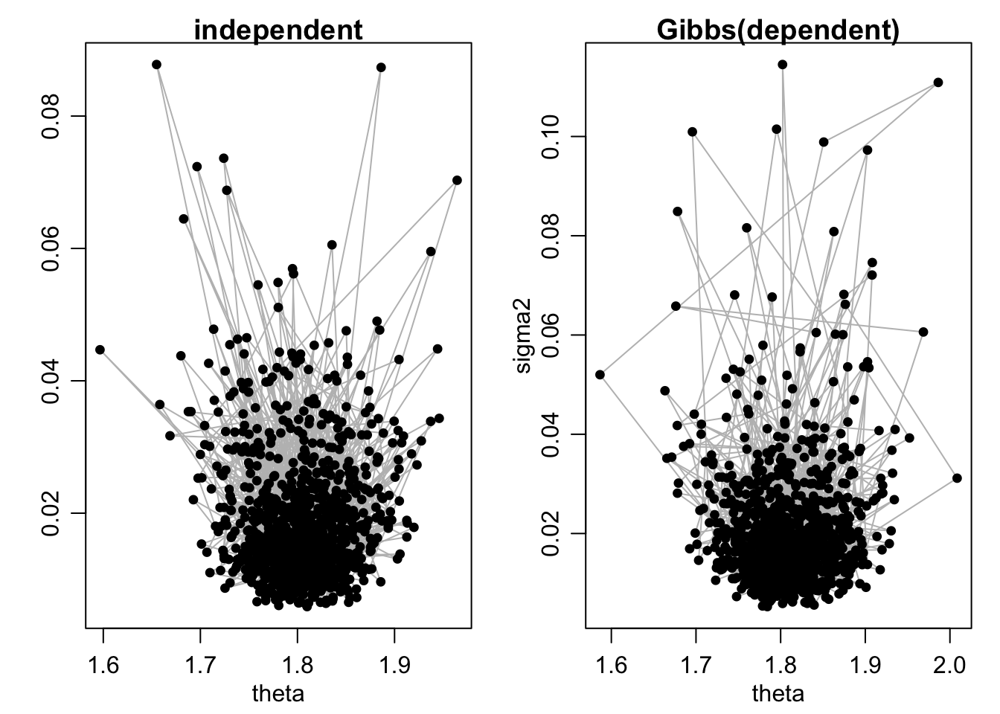
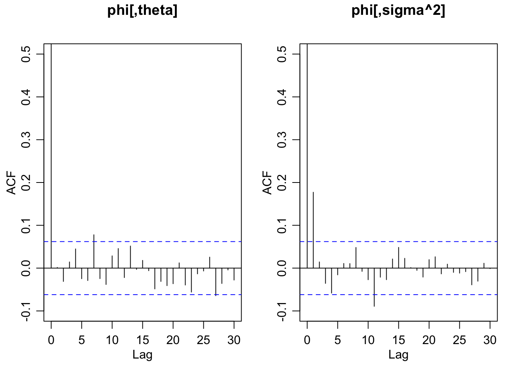

Lecture 10 Gibbs sampler
The following notes, mostly transcribed from Neath(0517,2021) lecture, summarize sections(6.1-6.4) of Hoff(2009).
10.1 A semiconjugate prior distribution
We write our model \(n\) observations from a normal population with mean \(\theta\) and variance \(\sigma^2\) and we want to do Bayesian inference about \(\theta\) (and maybe \(\sigma^2\)). The conjugate prior for this model is: \(\sigma^2 \sim \text{InverseGamma}(a = \nu_0 / 2, b = \nu_0\sigma_0^2 / 2)\)
Review(where does this come from)
\(X \sim\) Inverse gamma means \(X = 1 / Z\) where \(Z \sim\) gamma dist. When we say the conjugate prior for a normal variance is the inverse gamma that’s equivalent to saying the conjugate prior for a normal precision(precision = 1 / variance) is the gamma dist. The conjugate prior for \((\theta, \sigma^2)\) is completed by \(\theta | \sigma^2 \sim \text{Normal}( \mu_0, \sigma^2 / \kappa_0 )\). The variance depending on \(\sigma^2\) makes sense because the distribution is specified conditionally on \(\sigma^2.\)
Back to that gamma dist. The reparameterization from the usual gamma(\(a =\) shape, \(b =\) rate) to \((a = \nu_0 /2, b = \nu_0 \times \sigma^2_0 / 2)\). This is strategic; \(\sigma^2_0\) is the “prior best guess” and \(\nu_0\) measures the strength of belief in that best guess. More precisely, this prior contributes exactly the same information to the posterior as would \(\nu_0\) observations with a sample variance of \(\sigma_0^2.\) This conjugate prior represents a “prior sample of size \(\nu_0\)” “with a sample variance of \(\sigma_0^2\)”. Similarly (and more straightforwardly) the prior on \(\theta\) contributes to the posterior exactly what would be contributed by \(\kappa_0\) observations with a sample mean of \(\mu_0\).
The parameters in the normal conjugate prior are; \(\mu_0\) (prior sample mean) \(\kappa_0\) (prior sample size for the mean) \(\sigma_0^2\) (prior sample variance) \(\nu_0\) (prior sample size for variance). Then the updating is very intuitive \(\theta | \sigma^2, y_1, …, y_n \sim \text{Normal}( \mu_n, \sigma^2 / \kappa_n), ~~\kappa_n = \kappa_0 + n,~ \mu_n = (\kappa_0 \mu_0 + n \bar y)/ (\kappa_0 + n)\)
Question: How to decide a proper \(\kappa_0\)? If you’re uncertain, take \(\kappa_0\) to be small relative to \(n\) and it doesn’t really matter.
One of the strengths of the Bayesian paradigm is that it allows the incorporation of prior information. But in practice, non informative priors are much more commonly used (\(\kappa_0\) is small relative to \(n\)), thus the posterior is mostly determined by the results of the data, experiment, sample, etc. Though, this is not the only reason we use Bayesian Statistics. We like the updates, we like the interpretations in terms of probability.
Back in chapter 5 (our previous class in fact) we skipped some stuff about “improper priors”. Given this line of questioning maybe we should “un-skip” this section some time in the next few days
The punchline: There is a way to do Bayesian inference and not incorporate ANY prior information. You still have some decisions to make regarding the prior dist but they’re in terms of form not content. It will often be (usually be) very similar in terms of the substantive conclusions if not exactly the same to the frequentist. But there are some very complex models (maybe we get to this stuff toward the end of our course) where the Bayesian answer is actually a lot easier to get to than the frequentist.
Today’s class still doing normal model but suppose I don’t like this “conjugate prior”. I don’t like that the conjugate prior forces me to describe my uncertatinty about \(\theta\) conditionally on \(\sigma^2\) what if my prior knowledge of \(\theta\) and my prior knowledge of \(\sigma^2\) have nothing to do with each other and I want my prior on \(\theta\) to be indep of my prior on \(\theta\). This joint prior dist is ‘semiconjugate’ for the normal model. \[ \{~\theta \sim \text{Normal}(\mu_0, \tau_0^2); \quad 1/\sigma^2 \sim \text{gamma}(\nu_0/2, \nu_0 \sigma_0^2/2) ~\} \] With \(\sigma^2\) fixed this is the conjugate prior for \(\theta,\) and with \(\theta\) fixed this is the conjugate prior for \(\sigma^2\). Let’s take prior:
\(\theta \sim \text{Normal}(\mu_0 , \tau_0^2)\)
\(\sigma^2 \sim \text{InverseGamma}(\nu_0/2, \nu_0\sigma_0^2/ 2),\) \(\theta\) and \(\sigma^2\) are indep.
What posterior results from this prior? Conditionally \(\sigma^2,\) \(\theta\) has a normal posterior. i.e., { \(\theta | y_1, …, y_n , \sigma^2 ~ \} \sim \text{Normal}( \mu_n, \tau_n^2 )\). Remember we write \(1/\tau_n^2 = 1 / \tau_0^2 + n / \sigma^2.\) i.e., posterior precision = prior precision + data precision. So this is a prior that is defined not dependent on \(\sigma^2\) but the posterior is specified conditionally on \(\sigma^2\).
Note: there is no \(\kappa_0\) in this prior because \(\kappa_0\) is a parameter of the prior \(p(\theta | \sigma^2)\). In this prior \(p(\theta | \sigma^2) = p(\theta).\)
10.2 Gibbs sampling

This is a posterior dist for the (the flies’ wings) but pretend it’s the conjugate prior for \(\theta\) and \(1/\sigma^2\). The conditional prior \(p(\theta | \sigma^2 )\) is very tight (has low variance) when precision is high (\(\sigma^2\) is low) and is highly diffuse (has a high variance) when precision is low (\(\sigma^2\) is big). Remember in these pictures the conditional dist \(p(\theta | \sigma^2 )\) is visualized in these pictures by taking ‘horizontal slices’
Last week (Ch 5 in Hoff) we wrote \(p(\theta, \sigma^2) = p(\sigma^2) p(\theta | \sigma^2)\). For the semi conjugate prior we’re studying today (slide 4 of the 06a deck). This picture would not be like this. \(p(\theta | \sigma^2)\) would be the same for all \(\sigma^2\).
Let’s agree that this semiconjugate prior that is \(\theta \sim \text{Normal}( \mu_0, \tau_0^2 ), ~ \sigma^2 \sim IG(\nu_0 / 2, \nu_0 \sigma_0^2 / 2 ),~ \theta\) and \(\sigma^2\) indep i.e., \(p(\theta, \sigma^2) = \texttt{dnorm}(\theta | …) \times \texttt{dinvgamma}(\sigma^2 | … )\) is worth considering. So we ask: what posterior results? and we got half way to answering the question.
We know that \(p(\theta | \sigma^2, y_1, …, y_n)\) is Normal\((\mu_n, \tau_n^2 )\) so if we can solve \(p(\sigma^2 | y_1, …, y_n)\) we solve the posterior. This doesn’t have a nice solution as it turns out. However what does have a nice solution is \(p(\sigma^2 | \theta, y_1, …, y_n)=IG( \nu_n/2 , \nu_n \sigma_n^2(\theta) / 2 ).\) The \(\sigma_n^2(\theta)\) parameter is a weighted average of \(\sigma_0^2\) and the sample variance around \(\theta\).
Here’s our predicament; to sample from the posterior \(p(\theta, \sigma^2 | y_1, …, y_n)\) it would be sufficient to be able to sample from \(p(\theta | y_1, …, y_n)\) and \(p(\sigma^2 | \theta, y_1, …, y_n)\). But the marginal of \(\theta\) is not nice. We could also sample from this posterior \(p(\theta , \sigma^2 | y_1, …., y_n)\) if we could sample from \(p(\theta | \sigma^2, y_1, …, y_n)\) and \(p(\sigma^2 | y_1, ….,y_n)\). But we don’t have an answer for either of the marginals we have answers for both of the conditionals but not either of the marginals.
Just thinking about a pair of random variables call em \((X_1, X_2)\). I can write their joint density as \(f(x_1, x_2) = f(x_1)f(x_2 | x_1)\) or \(f(x_1, x_2) = f(x_2 )f(x_1 | x_2)\). But if I don’t know \(f(x_1)\) or \(f(x_2)\) but I know both of \(f(x_1|x_2)\) and \(f(x_2 | x_1)\). what can I do with this? Answer: I can do a Gibbs sampler.
Let’s pretend we had a draw from \(\sigma^{2(1)} \sim p(\sigma^2 | y )\) and \(\theta^{(1)} \sim p(\theta | \sigma^{2(1)}, y)\) so \((\theta, \sigma^2)^{(1)} \sim p(\theta, \sigma | y)\). So I have at least one draw from the joint posterior. \(\theta^{(1)} \sim p(\theta | y),\) let me do \(\sigma^{2(2)} \sim p(\sigma^2 | \theta^{(1)}, y)\) so now we got \((\theta^{(1)}, \sigma^{2(2)}) \sim p(\theta , \sigma^2 | y)\) thus \(\sigma^{2(2)} \sim p(\sigma^2 | y).\) Sample \(\theta^{(2)} \sim p(\theta | \sigma^{2(2)}, y)\) etc.
So the answer to the question : What can we do with both conditional dists (but neither marginal dist)? “with” here means “the means to simulate samples from”. Well if we could just get a starting point we could simulate a sequence such that each element in this sequence is marginally drawn from the joint posterior dist \(p(\theta, \sigma^2 | y).\) One complication here: Note that the draws would not be indep You see why? \(\theta^{(1)} \sim p(\theta | y), \theta^{(2)} \sim p(\theta | y)\) but they are not independent because \(\theta^{(2)}\) is drawn conditionally on \(\sigma^{2(2)}\) and \(\sigma^{2(2)}\) is drawn conditionally on \(\theta^{(1)}\) as a result there is dependence between \(\theta^{(2)}\) and \(\theta^{(1)}\). We’ll worry about that tomorrow.
This iterative sampling for the iteratively updated conditional distributions is called the Gibbs sampler. We’ll define it here in our 2-parameter model.
n <- length(y); ybar <- mean(y); s2 <- var(y);
S <- 1000
phi <- matrix(NA, S, 2)
theta <- ybar
sigma2 <- (nu.0*sigma2.0 + (n-1)*s2) / (nu.0 + n)
for(s in 1:S)
{
tau2.n <- 1 / (1/tau2.0 + n/sigma2)
mu.n <- tau2.n * (mu.0/tau2.0 + n*ybar/sigma2)
theta <- rnorm(1, mean=mu.n, sd=sqrt(tau2.n))
sigma2 <- 1/rgamma(1, (nu.0 + n)/2,
(nu.0*sigma2.0 + (n-1)*s2 + n*(ybar-theta)^2)/2)
phi[s,] <- c(theta, sigma2)
}This R code assumes we have a data vector \(\boldsymbol{y}\) and parameter variables \(\mu_0, ~ \tau_0^2\) (the parameters of the normal prior on \(\theta\)) \(\nu_0, ~ \sigma_0^2\)(parameters of the inverse gamma prior on \(\sigma^2\)).
As we learn more of these Markov chain Monte Carlo methods we’ll see this structure more and more. Where the simulation step is not done by
theta.sim <- r"dist" ( S, … )It’s gotta be done by for-loops because each draw depends on the previous draw.
\(\tau_0^2\) is a parameter of the prior dist but \(\tau_n^2\) should write \(\tau_0^2(\sigma^2)\). \(\theta = \bar y =\) sample mean, \(\sigma^2 =\) sample variance is sensible. The object \(\phi\)(phi) in this code is the matrix of simulations. The \(s\)th row of phi is the \(s\)th iteration of the Gibbs sampler the first column of phi is the \(\theta\)-components the second column is the \(\sigma^2\) components. See Hoff’s book. He does mean and precision. Note that the conditional of {\(\sigma^2 | \theta, y\)} depends on \(\sum (y_i - \theta)^2.\) Recalculating this for every updated \(\theta\) is inefficient see slide 20. Instead of calculating \(\sum (y_i - \theta)^2\) for each updated \(\theta\) value only recalculate \((\bar y - \theta)^2\).
10.3 Example: Midge wing length
Our prior information about these insects leads us to expect mean of 1.9 or so. mu.0 = 1.9
What variance to put on that? the logic that went into tau2.0 = .95^2? It was give low prior prob to \(\theta < 0.\) Expected sd around .10 or so, so set \(\sigma_0^2= (.10)^2 = .01\) and then set \(\nu_0 = 1\)
par(mar=c(3,3,1,1),mgp=c(1.75,.75,0),oma=c(0,0,.5,0))
par(mfrow=c(1,3))
# First the joint dist of (theta, sigma2)
plot(phi, type="l", col="gray", xlab="theta", ylab="sigma2")
points(phi, pch=19, cex=.75)
# Now the marginal dist of theta
plot(density(phi[,1]), lwd=2, xlab="theta",
ylab="p(theta|y1,...,yn)", main="")
abline(v= quantile(phi[,1], c(.025, .975)), lty=2)
# Now the marginal of sigma2
plot(density(phi[,2]), lwd=2, xlab="sigma2",
ylab="p(sigma2|y1,...,yn)", main="")
The left-most is a scatterplot. The “point cloud” represents the empirical joint posterior!
The marginal of \(\theta\) is not Normal but it appears symmetric and bell shaped so that’s nice.
The marginal \(p(\sigma^2 | y_1, …, y_n)\) is right-skewed the peak is around .02 or so. The sample variance was .017 so I guess this makes sense.
There’s another thing in the scatterplot that we wouldn’t normally draw (and we wouldn’t draw these lines in our data analysis reports either) they’re just to illustrate the path that the draws have taken. What would it look like if we did a plot like this but with indep draws? I believe it would be uglier than this
Let’s go back one class for an example where we could do indep simulations

So the difference between these two picture. In the left hand side the draws are independent, i.e., \(\theta^{(s)}\) is independent of \(\theta^{(s-1)}.\) In the right hand plot there is serial dependence. Is that apparent? I think not really.

In this case (the normal model) the dependence between \(\theta^{(s)}\) and \(\theta^{(s-1)}\) is VERY weak.
## 2.5% 50% 97.5%
## 1.716 1.806 1.903## 2.5% 50% 97.5%
## 0.007533 0.017341 0.053634## 2.5% 50% 97.5%
## 0.08679 0.13169 0.2315910.4 Discrete approximation of posterior distribution
Let’s be real general here. Suppose you have a single-parameter \(\theta\). You can write the posterior \(p(\theta|y) = c\times p(\theta)p(y | \theta) = p(\theta) p(y | \theta) / p(y). ~~ p(y)\) depends on integrating \(\theta\) out of the numerator of this thing. That may be hard. So here’s a thing you can do. Pick a bunch of \(\theta\) values, \(\theta^{(1)} < \theta^{(2)} < … < \theta^{(S)}\). I’m using the notation of MC simulation but it’s not that these are fixed points.
\(Pr(\theta < \theta^{(1)} |y) = 0\)
\(Pr(\theta > \theta^{(S)} | y) = 0\)
If those two conditions are met and abs\((\theta^{(s)} - \theta^{(s-1)})\) is small then the continuous dist \(p(\theta | y)\) can be well approximated by the discrete dist \(p(\theta^{(s)} | y)\) for \(s = 1, …, S\) and the discrete distribution can be computed exactly because I can compute \(p(\theta^{(s)}) p(y | \theta^{(s)})\) for each value of \(\theta^{(s)},\) divide each entry by the sum of all entries and the sum of the entries becomes 1 so it’s a probability distribution! You did something like this on your first HW assignment. For the mixture dist posterior you calculated it at a bunch of points between 0 and 1.
Now suppose you had two parameters \(p(\theta_1, \theta_2 | y)\). You can do the exact same thing except it doesn’t require double the computation. What does it require? If I split the range of \(\theta\) into 100 points. I had to compute the posterior 100 times. If I split the range of \(\theta^{(1)}\) and the range of \(\theta^{(2)}\) into 100 points each, I have to calculate the posterior \(100^2\) times. Still fine. What if I had 16 parameters \((\theta_1, \theta_2, …., \theta_{16} ) = \boldsymbol\theta\). Then I couldn’t do discrete approximation any more but I could still do a Gibbs sampler (or some other MCMC approach). So that’s going to become our go-to method.
10.5 Example
The R-code below evaluates \(p(\theta, 1/\sigma^2| y_1 ,..., y_n )\) on a \(121\times250\) grid of evenly \(1/\sigma^2\) spaced parameter values, with \(\theta \in\){ 1.500, 1.505, . . . , 2.095, 2.100 } and \(1/\sigma^2 \in\) { 1, 2, . . . , 249, 250 }. The first panel gives the discrete approximation to the joint distribution of { \(\theta, 1/\sigma^2\) }
theta <- seq(1.5, 2.1, .005)
I.sig2 <- seq(1, 250, 1)
G <- length(theta); H <- length(I.sig2); #121 #250
log.post <- matrix(NA, G, H);
for(g in 1:G)
{ for(h in 1:H)
{ log.post[g,h] <-
dnorm(theta[g], mu.0, 1/sqrt(tau2.0), log=T) +
dgamma(I.sig2[h], nu.0/2, nu.0*sigma2.0/2, log=T) +
sum(dnorm(y, theta[g], 1/sqrt(I.sig2[h]), log=T))
}}
post.grid <- exp(log.post); rm(log.post);
post.grid <- post.grid / sum(post.grid) par(mar=c(3,3,3,1),mgp=c(1.75,.75,0),oma=c(0,0,.5,0))
par(mfrow=c(1,3))
contours <- c(.001, .01, seq(.05, .95, .10)) * max(post.grid)
contour(theta, I.sig2, post.grid, levels=contours, drawlabels=F,
xlab="theta", ylab="1/sigma2", main="Joint distribution")
plot(theta, apply(post.grid, 1, sum), type="l", lwd=2,
xlab="theta", ylab="Probability", main="Marginal of mean")
plot(I.sig2, apply(post.grid, 2, sum), type="l", lwd=2,
xlab="1/sigma2", ylab="Probability", main="Marginal of precision")